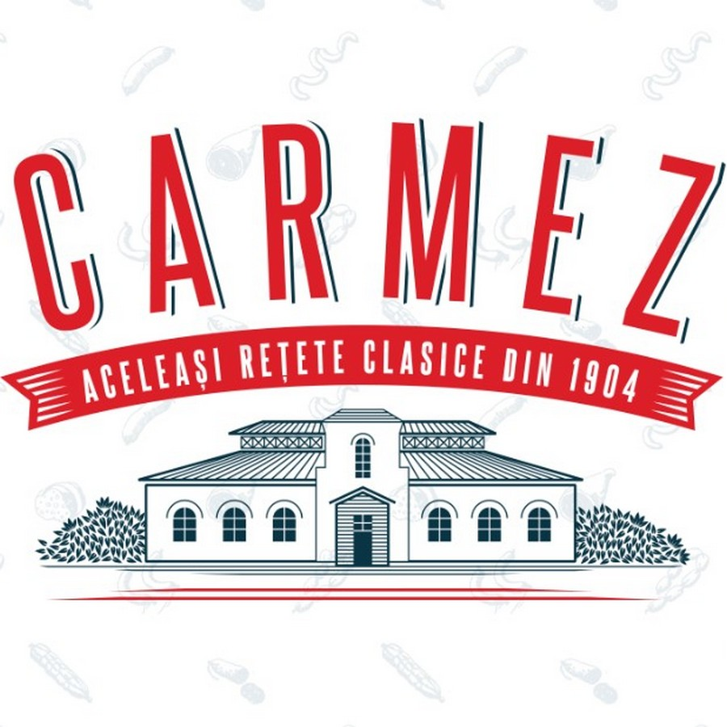
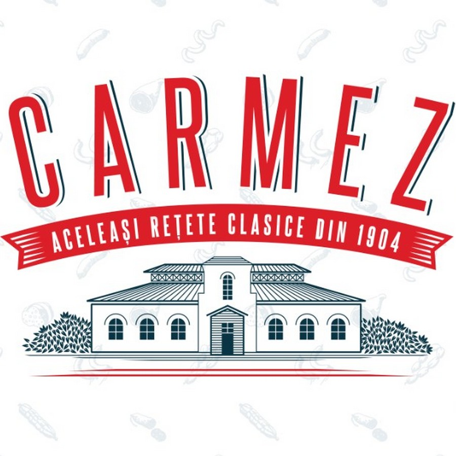
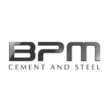
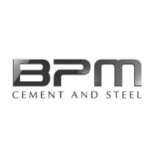

About us
ARTEZIANA.md is the logical development of the SRL "Vaciano Grup" company, founded by a father and his 2 sons to conduct activities to which they devoted their entire lives, namely Drilling artesian water wells. 45 years of accumulated knowledge and experience, concentrated in- ARTEZIANA.md
Drilling of artesian wells
Without exaggeration, we are the leaders in this field, with the most
flexible system for calculating the cost and selecting materials. Wells
are divided into 2 types: industrial and domestic. They can also have a
different design depending on the rocks of the water-bearing horizons
from which it is planned to extract water, namely: With and without a
gravel filter.
Type 1 - industrial wells for providing large enterprises and
objects of the agro-industrial complex, with a water flow rate from
100 to 1000 tons per day.
Type 2 - are wells for small businesses and private users
with a water flow rate of up to 100 tons per day.
You can learn about wells designs from our social networks or by
consulting. ü§ù
Arrangement of wells
After the well is drilled, a natural question arises:
«What should I do with it next?» Depending on the goals and objectives,
the following works are performed:
1- construction of a caisson well;
2- installation of pumping equipment;
3- conducting communication;
4- installation of automation systems;
5- construction and installation of storage tanks;
6- installation and connection of additional pumping stations and their automation systems.
Wells repairs
A water well, being a complex technical structure, sometimes requires
technical intervention. The most frequent works performed during the
repair:
1- Replacement of pumping equipment;
2- Mechanical cleaning of abandoned and mothballed wells;
3- Dry cleaning and prevention of wells, by treatment with acids and alkalis;
4- Restoration of tributaries by the action of a hydraulic or pneumatic projectile;
5- Elimination of depressurization of the rotted casing by installing a new casing inside the old one, followed by cementation of the ring space;
Our clients
 



 
